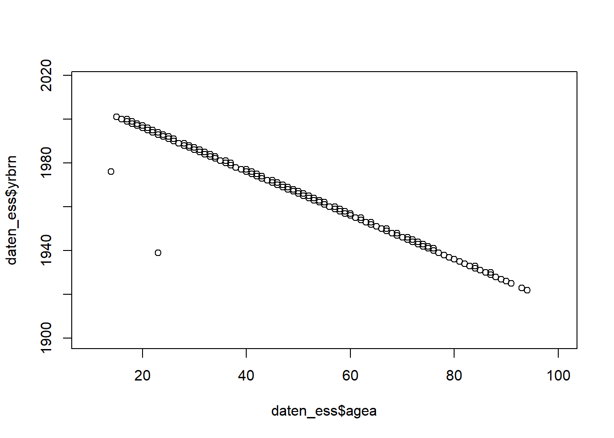

7 Wochenplan 07
…zur Einheit der 07. und 08. Woche.
7.1 Lernziele
In der zweiten Hälfte des Semester möchten wir das statistische Arbeiten mit R anhand des Umgangs mit “echten” Daten kennenlernen. Dazu nutzen wir Daten aus dem European Social Survey (ESS). Am Beginn der Arbeit mit einem Datensatz steht das Kennenlernen der Daten: Es gilt die Variablen und ihre Ausprägungen zu verstehen, erste Plausibilitätsprüfungen durchzuführen und Daten für die spätere Analyse aufzubereiten. Diese Techniken sollen Sie im Rahmen des siebten Wochenplans kennenlernen und so die Grundlage schaffen, in den folgenden Einheiten statistische Analysen mit dem Datensatz vorzunehmen.
Konkret lassen sich folgende Lernziele festhalten:
- Sie können einen CSV-Datensatz in R laden und kennen die Vor- und Nachteile dieses Dateiformats.
- Sie können einen geladen Datensatz anhand verschiedener Funktionen und in unterschiedlichem Detailliertheitsgrad beschreiben.
- Sie kennen erste Techniken zur Plausibilitätsprüfung von Datensätzen.
- Sie kennen erste Techniken zur Datenaufbereitung.
- Sie verstehen, wie und wozu man zufällige Teildatensätze erstellt.
7.2 Aufgaben
- Laden Sie sich den Datensatz “ESS1-8e01.csv” und ESS-Fragebogen (das Codebook) herunter (via OLAT) und speichern Sie die Dateien in Ihrem Arbeitsverzeichnis. Laden Sie anschliessend den Datensatz in RStudio über die Funktion ‘read.csv().’ Betrachten Sie den Datensatz über die Funktion ‘View()’ oder indem Sie auf Ihr erstelltes Objekt im Fenster “Environment” klicken. Vergleichen Sie für einzelne Variablen die Informationen im Datensatz mit den entsprechenden Fragebogenfragen!
setwd("C:/Users/SchweglG/R_Daten/06_HS21/R_Seminar-HS21")Als erster Schritt gilt es Ihr Arbeitsverzeichnis zu definieren, das heisst der Ort, an dem auch Ihre Daten abgelegt sind (ggfs. sind diese noch in einem weiteren Unterordner). In diesem Arbeitsverzeichnis würden auch allfällige weitere Daten liegen oder später automatisch von R abgespeichert (vgl. Aufgabe 5).
Sobald Sie die Kodezeilen bis daten_ess <- read.csv(file ="" eingegeben haben sollten Sie auf die Tabulatortaste klicken können und so Ihr Datenfile auswählen (und eben auch auf weitere Unterordner Ihres Arbeitsverzeichnis zurückgreifen). Hier gilt es allerdings folgendes zu beachten (vgl. auch diese Erläuterungen): Standardmässig ist das Arbeitsverzeichnis für R-Codechunks das Verzeichnis, in welchem Ihr RMarkdown-Dokument abgelegt ist. In RStudio können Sie diesen Standard auch über das Menü “Tools” -> “Global Options” -> “R Markdown” ändern. Hier gibt es nun zwei weitere Möglichkeiten: Sie können das aktuelle Arbeitsverzeichnis Ihrer R-Konsole (die Option “Current”) oder das Stammverzeichnis eines Projektes als Arbeitsverzeichnis verwenden (die Option “Project”).9 Mit “Current” sollte dann dasjene Verzeichnis ausgewählt werden, das wir auch über die Menüsteuerung zur Definition des Arbeitsverzeichnis auswählen. Jedoch wird damit noch nicht behoben, dass mit der Tabulatortaste weiter auf denjenigen Ordner zugegriffen wird, in dem das jeweils aktive RMardown-Dokument abgelegt ist. Deswegen ist es angebracht, vor dem Laden der Dateien auch nochmals das Arbeitsverzeichnis einzufügen:
setwd("C:/Users/SchweglG/R_Daten/06_HS21/R_Seminar-HS21")
daten_ess <- read.csv(file = "Daten/ESS1-8e01.csv")Eine weitere Alternative wäre das Arbeitsverzeichnis über einen “Setup” Kode anzupassen:
'''{r, setup, include=FALSE}
knitr::opts_knit$set(root.dir = "C:/Users/SchweglG/R_Daten/06_HS21/R_Seminar-HS21")
'''Und als Hinweis: Probieren Sie auch mal das Definieren und Laden des Datensatzes in einem RSkript (anstatt RMarkdown). Dort sollte dann auch die Tabulatortasten-Funktion möglich sein (unabhängig vom Speicherort des Skripts). Anschliessend können Sie den im Skript geschriebenen Kode in Ihr Markdown kopieren.
- Öffnen Sie nun die Datei “ESS1-8e01.csv” in einem Tabellenkalkulations- oder einem Textbearbeitungsprogramm (z.B. Microsoft Excel, dem Windows-Editor oder TextEdit auf Mac).
- Vergleichen Sie die beiden Varianten (Ihr Dataframe in RStudio und die im Textbearbeitungsprogramm geöffnete Datei), um das Dateiformat “CSV” besser zu verstehen.
- Ersetzen Sie anschliessend im Tabellenkalkulations- oder Textbearbeitungsprogramm die Kommas in der “ESS1-8e01.csv” Datei mit Strichpunkten und speichern Sie diese neue Version ab. Gehen Sie zurück zu R Studio und versuchen Sie, die neue Version des Datensatzes zu laden. Welchen Paramter müssen Sie anpassen, damit das funktioniert?
- Was denken Sie könnten Vorteile des CSV-Formats sein? Welche möglichen Nachteile im Vergleich zu anderen Dateiformaten (Excel, SPSS …) sind denkbar?
Das CSV-Dateiformat bietet eine sehr grundlegende Art und Weise um Daten oder eben Datensätze zu speichern. Indem die Kommas mit Strichpunkten ersetzt werden ändert sich das Zeichen, mit dem die Spalten bzw. Variablen getrennt werden. Die Fälle werden im Format jeweils über Zeilenumbrüche getrennt werden.
?read.csvDie read.csv-Funktion ermöglicht über das Argument sep = zu bestimmen, über welches Zeichen die Spalten eingelesen werden sollen. Wir definieren also über das Argument eine bestimmte Spezifizierung (es sind nicht die Standardwerte, die “,”) mit dem einem bestimmten Paramater (es sind neu “;”).
Das CSV-Dateiformat hat vor allem zwei Vorteile: Auf der einen Seite – und wie in der Teilaufgabe oben deutlich wurde – können über beliebige Texteditoren direkt in diese Daten eingegriffen werden, da im Format lediglich Rohdaten in Textform abgespeichert sind. Bei anderen Dateiformaten für Datensätze wie etwa .sav (von der Statistiksoftware SPSS) ist dies nicht so einfach möglich. Damit ist das CSV-Format ein besonders transparenter Standard, mit dem fast alle Programme und Betriebssysteme umgehen können. Auf der anderen Seite ist das CSV-Dateiformat nicht nur transparent, sondern beansprucht auch nur sehr wenig Speicherplatz. Grosse Datensätze können so schnell von RStudio gelesen und bereitgestellt werden. Die grosse Datensätze werden dadurch nicht komplexer, sondern womöglich lediglich unübersichtlich.
Dem gegenüber steht der Nachteil von CSV, dass das Dateiformat keine Möglichkeiten bietet, Informationen auf komplexere Art und Weise abzuspeichern (z.Bsp. Levels für kategoriale Variablenausprägungen oder das Speichern von mehr als zwei Dimensionen). CSV bleibt so ein Format für “Rohdaten.” Weiter besteht die Möglichkeit, dass Sonderzeichen in den Daten selbst zu Problemen führen (also etwa ein “,” als Teil einer Ausprägung, dass dann fälschlicherweise als Spaltenumbruch eingelesen würde).
- Versuchen Sie mit Funktionen, die Sie bisher kennengelernt haben, den geladenen Datensatz kurz zu beschreiben.
Wir haben uns hier ein Objekt der Klasse…
class(daten_ess)## [1] "data.frame"geladen, dass Daten als…
typeof(daten_ess)## [1] "list"abspeichert.
Unser Datensatz umfasst..
dim(daten_ess)[1]## [1] 1525Fälle mit jeweils…
dim(daten_ess)[2]## [1] 21Variablen.
Die zweite und die zweitletzte Variablen heisst etwa:
names(daten_ess)[c(1,21)]## [1] "x" "hinctnta"Die ersten fünf Variablen – alphabetisch geordnet – heissen:
sort(names(daten_ess))[1:5]## [1] "agea" "chldhm" "cntry" "edctn" "edulvla"Aktuell umfasst der Datensatz nur metrische Daten und eine eine Character-Variable als Konstante.10 Auch eine Variable wie “gndr” ist daher eine Zahl in dem Datensatz und wird aktuell von RStudio als ein numerischer Vektor behandelt. Die Funktion str() liefert hierfür eine Übersicht, in dem sie die interne Struktur eines R-Objekts aufzeigt. Für unseren Datensatz bedeutet dies: die Variablen (auf welche wir mit $ zugreifen können), deren Dateiformat sowie deren ersten paar Ausprägungen.
str(daten_ess)## 'data.frame': 1525 obs. of 21 variables:
## $ x : int 1 2 3 4 5 6 7 8 9 10 ...
## $ cntry : chr "CH" "CH" "CH" "CH" ...
## $ essround: int 8 8 8 8 8 8 8 8 8 8 ...
## $ idno : int 1 3 5 6 9 14 21 22 24 27 ...
## $ pspwght : num 0.9 1.1 1.02 1.09 1.03 ...
## $ pweight : num 0.465 0.465 0.465 0.465 0.465 ...
## $ polintr : int 2 2 2 3 2 2 2 3 2 1 ...
## $ happy : int 8 6 8 8 8 5 9 3 8 10 ...
## $ gndr : int 1 2 1 2 1 1 1 2 2 2 ...
## $ yrbrn : int 1960 1953 1987 1949 1963 1948 1961 1955 1980 1941 ...
## $ agea : int 56 63 29 67 53 68 55 61 36 75 ...
## $ chldhm : int 2 2 2 2 2 2 2 2 2 2 ...
## $ edulvla : int 3 3 5 2 3 3 3 2 5 4 ...
## $ eisced : int 3 3 7 2 3 3 3 2 6 5 ...
## $ eduyrs : int 9 12 18 9 10 9 9 8 13 16 ...
## $ pdwrk : int 1 1 1 0 0 0 1 0 1 0 ...
## $ edctn : int 0 0 0 0 0 0 0 0 0 0 ...
## $ wkhtot : int 60 20 50 37 44 46 45 44 24 55 ...
## $ isco08 : int 1200 5419 2210 5223 7112 4220 8300 8100 5223 1120 ...
## $ uemp3m : int 1 1 2 2 1 1 2 2 2 1 ...
## $ hinctnta: int 10 1 10 1 77 2 5 77 4 5 ...Über die summary()-Funktion wird auch nochmals deutlich, dass hier tatsächlich Rohdaten eingelesen wurden: Auch fehlende Werte gelten aktuell noch als gültige Zahlen (…jemand wäre also im Jahr 7777 geboren).
summary(daten_ess$yrbrn)## Min. 1st Qu. Median Mean 3rd Qu. Max.
## 1922 1954 1968 1991 1984 7777Weiter sehen wir, dass sogenannte Dummy-Variablen oft 1-2 anstatt 0-1 kodiert sind.
summary(daten_ess$chldhm)## Min. 1st Qu. Median Mean 3rd Qu. Max.
## 1.000 1.000 2.000 1.656 2.000 2.000…oder wir sehen, dass Geschlecht ziemlich gleichmässig verteilt zu sein scheint:
summary(daten_ess$gndr)## Min. 1st Qu. Median Mean 3rd Qu. Max.
## 1.000 1.000 1.000 1.483 2.000 2.000
- In den Variablen zum Alter und den Bildungsabschlüssen der befragten Personen haben sich einige Fehler eingeschlichen. Was sind die Fehler? Und welche Fälle betrifft das (Fallnummer)?
Wir können drei Stufen von Plausibilitätstests unterscheiden:
Bei der ersten Stufe betrachten wir lediglich die Zahlen selber, wobei uns vor allem Häufigkeitsverteilungen und Extremwerten interessiert. Wir beginnen mit der Variable zum Alter:
min(daten_ess$agea)## [1] 14max(daten_ess$agea)## [1] 999summary(daten_ess$agea)## Min. 1st Qu. Median Mean 3rd Qu. Max.
## 14.00 32.00 48.00 51.75 63.00 999.00which(daten_ess$agea==999)## [1] 121 196 320 717 791 800which(daten_ess$agea>120)## [1] 121 132 196 320 717 791 800Hier scheint nun ein erster Fehler sichtbar zu sein, nämlich beim Fall 132. Diese Person soll angeblich 320 Jahre alt sein:
daten_ess$agea[132]## [1] 320Die Werte zu den Bildungsabschlüssen sind kategoriale Daten. Deshalb lohnt es sich hier mit Tabellen zu arbeiten, um Häufigkeitsverteilungen und Extremwerte zu betrachten:
table(daten_ess$edulvla)##
## 1 2 3 4 5 55 77 88
## 51 265 665 45 491 3 1 4table(daten_ess$eisced)##
## 0 1 2 3 4 5 6 7 55 77 88
## 1 50 265 543 122 226 114 197 3 1 3Hier scheint noch nicht wirklich ein Fehler sichtbar zu sein.
Auf der zweiten Stufe überprüfen wir nun, ob die Daten auch wirklich Sinn machen, das heisst im Rahmen der Codierungen gemäss Fragebogen. So wird schnell deutlich, dass wir natürlich fehlende Werte auf eine bestimmte Art und Weise in unserem Datensatz vorfinden. Beim Alter ist dies 999 (“Not available”), während es bei den Bildungsabschlüssen die Ausprägungen 55 (“Other”), 77 (“Refusal”), 88 (“Don’t know”) und 99 (“No answer”) sind. Diese Ausprägungen können wir dann als fehlende Werte, sogenannte NAs definieren:
daten_ess$agea[daten_ess$agea==999] <- NA
daten_ess$edulvla[daten_ess$edulvla>5] <- NA
daten_ess$eisced[daten_ess$eisced>7] <- NAEin Vergleich mit dem Codebuch zeigt dabei aber auch, dass erst Personen ab dem 15. Lebensjahr befragt wurden. Folgender Fall 352 macht also keinen Sinn:
which(daten_ess$agea<15)## [1] 352Hingegen ist die bei der Variable eisced auftauchende Ausprägung ‘0’ ist durchaus zulässig und entspricht “Not possible to harmonise into ES-ISCED.”
Auf der dritten Stufe vergleichen wir dann mittels Kreuztabellierungen und logischen Überlegungen jeweils (mindestens) zwei Variablen miteinander, um so nochmals Fehler zu entdecken. Dieses könnten wir mittels eines Plots machen, wie dies etwa Vanessa Leutner vorgeschlagen hat:
plot(daten_ess$agea, daten_ess$yrbrn, xlim = c(10,100), ylim = c(1900,2017)) Dann können wir eine zusätzliche Variable berechnen, die als Fehlerindikator für die Angaben zum Alter dient. Diese zusätzliche Variable nutzen wir dann als logische Bedingung, um fehlerhafte Fälle zu entdecken:
daten_ess$agea_l <- daten_ess$agea + daten_ess$yrbrn
daten_ess$agea_l[daten_ess$agea_l!=2016]## [1] 2017 2017 2017 2017 2017 2017 2017 2017 NA 2017 2304 2017 NA 2017 2017
## [16] 2017 NA 2017 2017 2017 1990 2017 2017 2017 2017 2017 2017 2017 2017 2017
## [31] 2017 2017 2017 2017 2017 2017 2017 2017 2017 2017 2017 2017 2017 2017 NA
## [46] 2017 2017 2017 NA NA 2017 2017 2017 2017 2017 2017 2017 2017 2017 2017
## [61] 2017 2017 2017 2017 2017 2017 2017 2017 2017 2017 2017 2017 2017 2017 2017
## [76] 2017 2017 2017 2017 1962 2017 2017 2017 2017 2017 2017 2017 2017 2017which(daten_ess$agea_l!=2016 & daten_ess$agea_l!=2017)## [1] 132 352 1414#Identifikation der Fälle
daten_ess[daten_ess$agea_l!=2016
& daten_ess$agea_l!=2017
& !is.na(daten_ess$agea_l),c("agea", "yrbrn")]## agea yrbrn
## 132 320 1984
## 352 14 1976
## 1414 23 1939Neben den bereits bekannten beiden Fällen (132 & 352) wir so auch noch der dritte falsche Fehler im Datensatz bei der Altersvariable deutlich, nämlich Fall 1414.
Bei den Angaben zum Bildungsniveau wieder können wir stärker Kreuztabellen nutzen, um zwei Fehler zu entdecken:
table(daten_ess$edulvla, daten_ess$eisced)##
## 0 1 2 3 4 5 6 7
## 1 0 50 0 0 0 1 0 0
## 2 0 0 265 0 0 0 0 0
## 3 0 0 0 543 122 0 0 0
## 4 0 0 0 0 0 45 0 0
## 5 0 0 0 0 0 180 114 197table(daten_ess$eduyrs, daten_ess$edulvla)##
## 1 2 3 4 5
## 0 2 1 0 0 0
## 1 1 0 1 0 0
## 2 1 2 0 0 0
## 3 1 0 0 0 0
## 4 4 1 0 0 0
## 5 2 4 0 0 0
## 6 12 5 3 0 1
## 7 5 1 3 0 0
## 8 5 44 52 2 9
## 9 13 125 302 24 91
## 10 1 34 71 6 20
## 11 1 22 30 1 12
## 12 3 19 82 1 62
## 13 0 4 43 2 38
## 14 0 0 39 2 31
## 15 0 3 12 3 32
## 16 0 0 13 3 37
## 17 0 0 5 1 48
## 18 0 0 3 0 52
## 19 0 0 4 0 29
## 20 0 0 0 0 13
## 21 0 0 0 0 6
## 22 0 0 0 0 5
## 23 0 0 1 0 3
## 25 0 0 0 0 1
## 26 0 0 0 0 1
## 77 0 0 0 0 0
## 88 0 0 1 0 0table(daten_ess$eduyrs, daten_ess$eisced)##
## 0 1 2 3 4 5 6 7
## 0 0 2 1 0 0 0 0 0
## 1 0 1 0 1 0 0 0 0
## 2 0 1 2 0 0 0 0 0
## 3 0 1 0 0 0 0 0 0
## 4 0 4 1 0 0 0 0 0
## 5 0 2 4 0 0 0 0 0
## 6 0 12 5 3 0 1 0 0
## 7 0 5 1 3 0 0 0 0
## 8 0 5 44 49 3 9 0 2
## 9 0 13 125 287 15 90 12 13
## 10 0 1 34 67 4 22 3 1
## 11 0 1 22 20 10 10 2 1
## 12 1 2 19 55 27 23 15 26
## 13 0 0 4 23 20 21 10 9
## 14 0 0 0 18 21 14 8 11
## 15 0 0 3 5 7 11 15 9
## 16 0 0 0 6 7 11 15 14
## 17 0 0 0 1 4 6 15 28
## 18 0 0 0 1 2 6 13 33
## 19 0 0 0 2 2 1 4 24
## 20 0 0 0 0 0 1 1 11
## 21 0 0 0 0 0 0 0 6
## 22 0 0 0 0 0 0 1 4
## 23 0 0 0 1 0 0 0 3
## 25 0 0 0 0 0 0 0 1
## 26 0 0 0 0 0 0 0 1
## 77 0 0 0 0 0 0 0 0
## 88 0 0 0 1 0 0 0 0#Identifikation der Fälle
which(daten_ess$edulvla==1 & daten_ess$eisced==5)## [1] 443which(daten_ess$edulvla==3 & daten_ess$eisced==3 & daten_ess$eduyrs<6)## [1] 1482daten_ess[c(which(daten_ess$edulvla==1 & daten_ess$eisced==5),
which(daten_ess$edulvla==3 & daten_ess$eisced==3 & daten_ess$eduyrs<6)),
c("edulvla", "eisced")]## edulvla eisced
## 443 1 5
## 1482 3 3Wir finden so zwei Fälle entdeckt, bei denen Fehler in den Bildungsabschlüssen drin stecken, nämlich Fall 443 und Fall 1482.
Josias Bruderer hat für ein solches Fehlersuchen mittels logischer Bedingungen auch die Alters- und Bildungsvariablen kombiniert:
# Menschen die vor 3 Jahren in die Schule kamen
errors_a <- which(daten_ess$agea < (daten_ess$eduyrs) + 3
& daten_ess$agea < 999 & daten_ess$eduyrs < 77)
# Menschen mit Fehler im Bildungsabschluss gem. Definition ES-ISCED
errors_b <- c()
errors_b <- c(errors_b, which(daten_ess$eisced == 1
& daten_ess$edulvla > 1
& daten_ess$edulvla < 55))
errors_b <- c(errors_b, which(daten_ess$eisced == 2
& daten_ess$edulvla != 2
& daten_ess$edulvla < 55))
errors_b <- c(errors_b, which(daten_ess$eisced == 3
& daten_ess$edulvla != 3
& daten_ess$edulvla < 55))
errors_b <- c(errors_b, which(daten_ess$eisced == 4
& daten_ess$edulvla != 3
& daten_ess$edulvla < 55))
errors_b <- c(errors_b, which(daten_ess$eisced == 5
& daten_ess$edulvla != 4
& daten_ess$edulvla != 5
& daten_ess$edulvla < 55))
errors_b <- c(errors_b, which(daten_ess$eisced == 6
& daten_ess$edulvla != 5
& daten_ess$edulvla < 55))
errors_b <- c(errors_b, which(daten_ess$eisced == 7
& daten_ess$edulvla != 5
& daten_ess$edulvla < 55))
# Menschen mit "unlogischem" Alter für Bildungsabschluss gem. ES-ISCED
errors_c <- c()
errors_c <- c(errors_c, which(daten_ess$eisced == 1
& daten_ess$agea < 11))
errors_c <- c(errors_c, which(daten_ess$eisced == 2
& daten_ess$agea < 14))
errors_c <- c(errors_c, which(daten_ess$eisced == 3
& daten_ess$agea < 16))
errors_c <- c(errors_c, which(daten_ess$eisced == 4
& daten_ess$agea < 16))
errors_c <- c(errors_c, which(daten_ess$eisced == 5
& daten_ess$agea < 18))
errors_c <- c(errors_c, which(daten_ess$eisced == 6
& daten_ess$agea < 20))
errors_c <- c(errors_c, which(daten_ess$eisced == 7
& daten_ess$agea < 20))
sort(unique(c(errors_a, errors_b, errors_c)))## [1] 352 443Im Umgang mit diesen fehlenden Werten haben wir drei Möglichkeiten:
Wir können die benötigen Angaben von anderen Werten ableiten (1), zum Beispiel das Alter vom Geburtsjahr.
which(daten_ess$agea>120)## [1] 132daten_ess$agea[132]## [1] 320daten_ess$agea[132] <- 2016 - daten_ess$yrbrn[132]
daten_ess$agea[132]## [1] 32Weiter können wir uns einen Wert berechnen bzw. diesen schätzen (2):
which(daten_ess$edulvla==3 & daten_ess$eisced==3 & daten_ess$eduyrs<6)## [1] 1482daten_ess$eduyrs[1482] <- round(mean(daten_ess$eduyrs[daten_ess$edulvla==3],
na.rm = T))
daten_ess$eduyrs[1482]## [1] 11Die letzte Option ist dann noch die falschen Angaben als fehlende Werte zu definieren (3):
daten_ess$edulvla[443] <- NA
- Bonusaufgabe: In den folgenden Wochen möchten wir nicht mit dem ganzen Datensatz arbeiten, sondern lediglich mit einer zufälligen Auswahl von 200 Fällen. Versuchen Sie, einen solchen Teildatensatz randomisiert zu erstellen und speichern Sie ihn mittels der Funktion ‘write.csv()’ unter dem Namen “TD_ESS1-8e01.csv” ab.
Um den zufälligen Datensatz mit 200 Fällen zu erstellen bieten sich mindestens zwei Möglichkeiten an:
Die erste Möglichkeit nutzt die sample()-Funktion und wählt zufällig 200 Zahlen einer Variable aus, die von 1 bis 1525 durchläuft. Eine solche Variable ist “x” im Datensatz – oder auch einfach die Zeilenzahl. Die zufällig ausgewählten Zahlen dieser Variable können als Angabe für die Zeilen in die eckige Klammerfunktion eingesetzt werden.
daten_ess_HS20 <- daten_ess[sample(row.names(daten_ess),200),]
#oder auch:
daten_ess_HS20 <- daten_ess[sample(daten_ess$x,200),]Die zweite Möglichkeit berechnet eine Zufallsvariable und sortiert den Datensatz dann nach der Grösse dieser Zufallsvariable. Anschliessend können dann die – jetzt völlig zufällig – ersten 200 Fälle ausgewählt werden.
daten_ess$zv <- rnorm(1525)
daten_ess <- daten_ess[order(daten_ess$zv),]
daten_ess_HS20 <- daten_ess[1:200,1:22]Neben diesen beiden Möglichkeiten haben weitere Seminarteilnehmer*innen auch Ideen geliefert.
Josias Bruder und Fabio Keller haben die erste Möglichkeit etwas ergänzt:
daten_ess_HS20 <- daten_ess[sample(1:nrow(daten_ess),200),]Ebenso wie Felix Sigrist:
daten_ess_HS20 <- daten_ess[sample(nrow(daten_ess),200),]Delia Bazzigher und Julien Lattmann schlagen weiter die Funktion sample_n aus dem “dpylr” Paket vor (dieses ist Teil der Kernpakete des “tidyverse”):
#installed.packages("dplyr")
library(dplyr)
daten_ess_HS20 <- sample_n(daten_ess, 200)Der zufällige erstellte Datensatz kann anschliessend wiederum als CSV-Datei abgespeichert werden (die Datei wird dann im Arbeitsordner abgelegt):
write.csv(daten_ess_HS20, file = "Daten/ESS1-8e01_HS21.csv")Die RStudio-Projekten erlauben es Ihnen, Ihre Arbeit in mehrere Kontexte aufteilen, die jeweils über ein eigenes Arbeitsverzeichnis, einen eigenen Arbeitsbereich, einen eigenen Verlauf und eigene Quelldokumente verfügen. Sie sind eben nochmals abgeschlossene Projekte innerhalb von RStudio und können über die Menüsteuerung “File” -> “New Project…” gestartet werden.↩︎
Wiederum spezifiziert bei numerische Daten dass
intganze Zahlen undnumkomplexe Zahlen sind (mit Kommastellen, negative Werte, usw.)↩︎